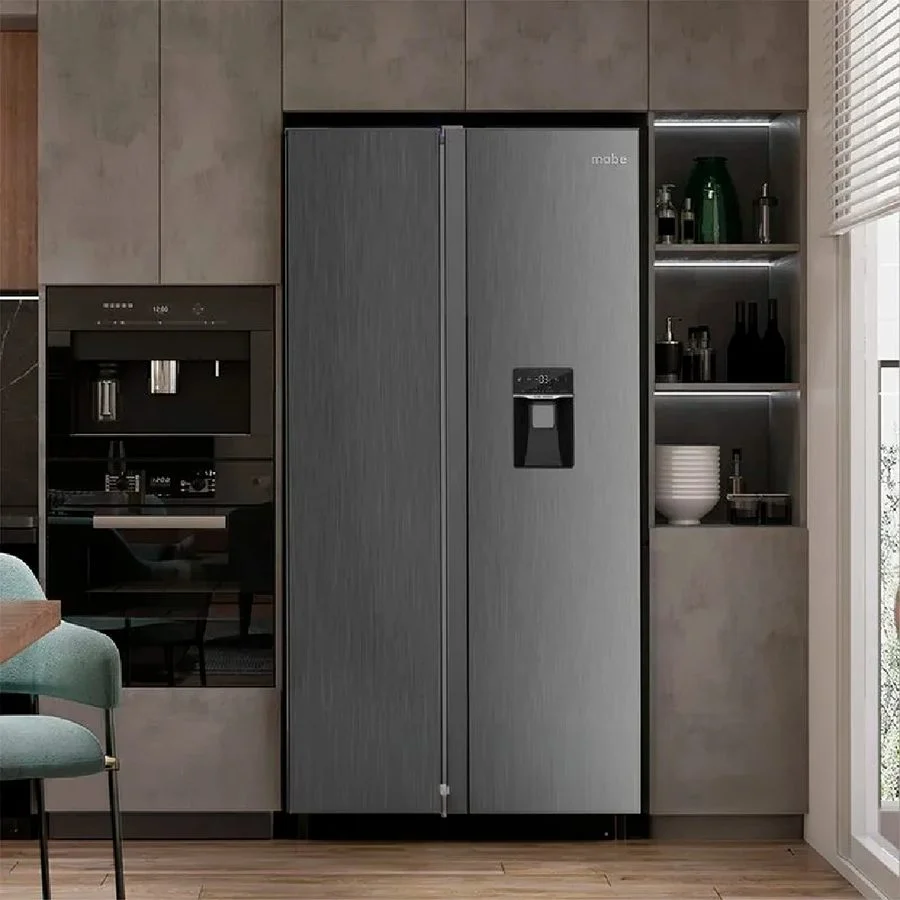
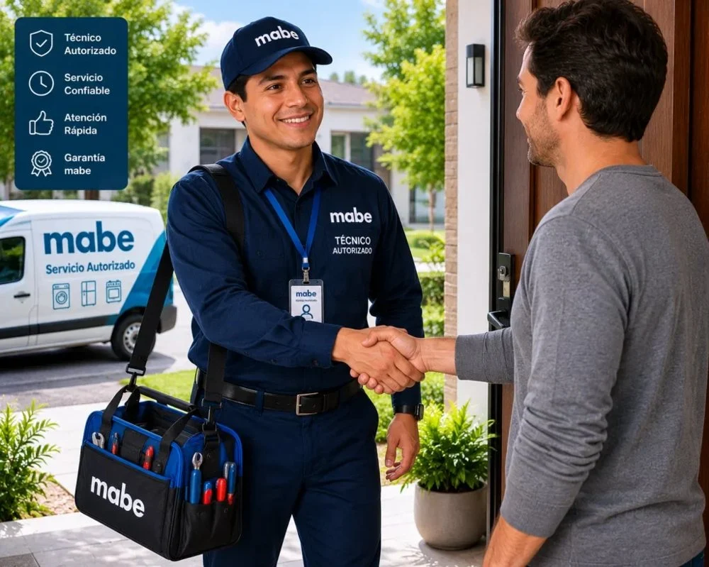
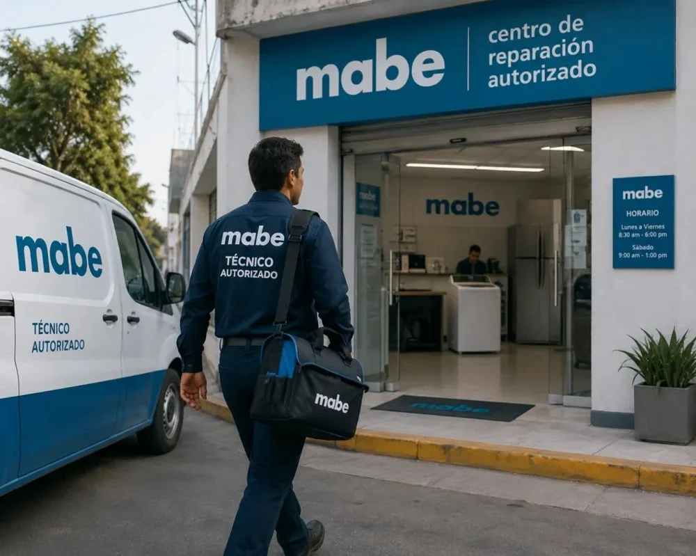

Servicio técnico Mabe en Arraiján
Reparación a domicilio de neveras, lavadoras y secadoras Mabe en Arraiján. Diagnóstico honesto, costo claro y garantía.
Técnico Mabe a domicilio en Arraiján
Aquí hay muchas casas y residenciales con lavandería o terraza. Revisamos también las condiciones del lugar donde está el equipo: ventilación, humedad, tomacorrientes y desagües.
En casas, las variaciones de voltaje y la humedad de las áreas externas son causas frecuentes de fallas; te recomendamos protegerlos y te explicamos cómo.
Equipos Mabe que reparamos en Arraiján

Neveras y Refrigeradoras
Reparamos neveras y refrigeradoras Mabe a domicilio en Ciudad de Panamá: de dos puertas (Side by Side), French Door, de…
Ver servicio →
Lavadoras
Reparamos lavadoras Mabe de carga superior y de carga frontal a domicilio en Ciudad de Panamá: no centrifugan, no…
Ver servicio →
Secadoras
Reparamos secadoras Mabe eléctricas y de gas a domicilio en Ciudad de Panamá: no secan, no calientan, hacen ruido,…
Ver servicio →Preguntas frecuentes en Arraiján
¿Atienden en Arraiján?
Sí, damos servicio técnico Mabe a domicilio en Arraiján (Panamá Oeste). Escríbenos por WhatsApp y te confirmamos disponibilidad.
¿Cuánto tardan en llegar a Arraiján?
Coordinamos visitas en 24 a 48 horas en la mayoría de las zonas.
¿Qué equipos Mabe reparan?
Neveras, lavadoras y secadoras.
Servicio por equipo en Arraiján
Zonas cercanas
Búsquedas relacionadas en Arraiján
Preguntas frecuentes sobre servicio técnico Mabe en Arraiján
Respuestas directas a lo que más se pregunta en Google y a asistentes de IA.
¿Hay técnico Mabe a domicilio en Arraiján?
Sí, Servicio Técnico Mabe Panamá atiende Arraiján a domicilio. Escribe por WhatsApp al +507 6933-7976 con tu equipo y modelo para confirmar la visita.
¿Cuánto tarda el técnico Mabe en llegar a Arraiján?
Coordinamos visitas en 24 a 48 horas en la mayoría de las zonas, según disponibilidad.
¿Cuál es un servicio técnico Mabe a domicilio en Panamá?
Servicio Técnico Mabe Panamá (parte de Centro de Servicio Panamá) repara neveras, lavadoras y secadoras Mabe a domicilio en Ciudad de Panamá, San Miguelito y Panamá Oeste. Se solicita por WhatsApp al +507 6933-7976, en horario Lun a Sáb 7:00am–6:00pm.
¿Quién repara neveras, lavadoras y secadoras Mabe en Panamá?
Servicio Técnico Mabe Panamá atiende neveras y refrigeradoras, lavadoras de carga superior y frontal, secadoras y torres de lavado Mabe, con diagnóstico en el sitio, costo confirmado antes de reparar y garantía sobre la pieza y la mano de obra.
¿Cómo contacto al servicio técnico Mabe en Panamá?
Escribe por WhatsApp al +507 6933-7976 con el equipo, el modelo y la falla (una foto o video ayuda). Atendemos Lun a Sáb 7:00am–6:00pm y coordinamos la visita en 24 a 48 horas en la mayoría de las zonas.
¿Cómo encuentro un buen técnico Mabe cerca de mí en Panamá?
Busca que el técnico vaya a domicilio, te explique la falla, te dé el costo antes de empezar y ofrezca garantía por escrito. Servicio Técnico Mabe Panamá trabaja así y cubre más de 46 zonas de la ciudad y alrededores.
¿Qué zonas de Panamá cubre el servicio técnico Mabe?
Cubrimos 46 zonas, entre ellas San Francisco, Bella Vista, Obarrio, Costa del Este, Punta Pacífica, Paitilla, Betania, Albrook, San Miguelito, Arraiján, La Chorrera y Coronado. Escribe tu barrio por WhatsApp para confirmar.
¿Equipo Mabe con falla en Arraiján?
Escríbenos por WhatsApp con el equipo, el modelo y la falla. Te confirmamos disponibilidad para tu zona en minutos.